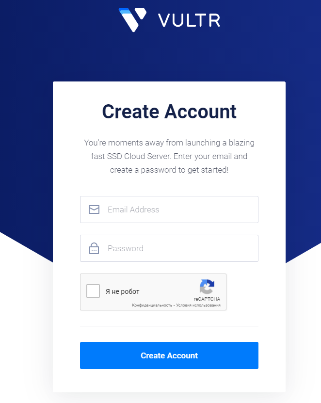

As a first step we need to rent a server (VPS). I recommend
Vultr.com.
Registation
Go to the
site, click Sign Up

Fill the form, click Create Account:

On the 'Products' page click Plus button:
We need at least 4Gb RAM server, let's chose the closest one:


Now let's rent it (hostname can be any), click Deploy Now:

Then click 'Products' at the top left and wait till our server's status is 'Running' (green) and
click on the server:

We need the following server data, copy&paste them to notepad:

Now we need to connect to the server, to do this we will use
Termius. First of all download and install it.
Open Terminus and click '+New Host' as shown on the screen:

In the following fields we need to type our server data (that we copied from Vultr): IP address,
login and pass. You can type anything in 'Label' field - this is just the name of the server for
your convenience.

Double click on the server, in the pop-up click 'Yes'.


Now we are in, congratulations! So we can continue.